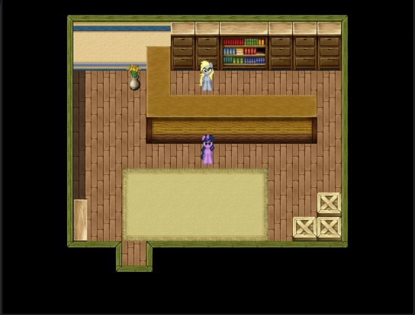

Новости от 01.05.2018+ SSL сертификат :3
Новости от 01.05.2018Сегодня в 13:00 по GMT+6 крашнулся сайт из-за ошибки на хостинге
Сайт был недоступен около 30 минут...
Новости от 28.04.2018Субботние новости Шерлок Твай:
1 → Допилены дома снаружи. Теперь у всех домов есть окна и двери, а так же физика.
2 → Продолжается работа над ВечноСраннымЛесом и Ссанным Яблоком.
3 → Сделана Ратуша.
4 → Сделана Почта Эквестрии.
5 → Запилил ночное освещение.
6 → Сделал Школу Понивилева.
7 → Завершено взаимодействие с деревьями.
8 → Завершён интерьер 14-ти домов, теперь в каждый из них можно войти.
--------------------------------------------------------------------
Скриншоты:
